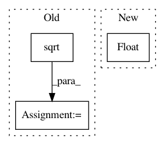

fdb79b730cf635480ac1b264392345936b591ad0,src/skmultiflow/trees/hoeffding_tree_regressor.py,HoeffdingTreeRegressor,normalize_target_value,#HoeffdingTreeRegressor#Any#,214
Before Change
/ self.samples_seen) / self.samples_seen
if sd_squared >= 0:
mean = self.sum_of_values / self.samples_seen
sd = np.sqrt(sd_squared)
return (y - mean) / (3 * sd)
else:
return 0.0
return 0.0
After Change
mean = self.sum_of_values / self.samples_seen
sd = compute_sd(self.sum_of_squares, self.sum_of_values, self.samples_seen)
if sd > 0:
return float(y - mean) / (3 * sd)
return 0.0
def _new_learning_node(self, initial_class_observations=None, perceptron_node=None):
In pattern: SUPERPATTERN
Frequency: 4
Non-data size: 3
Instances
Project Name: scikit-multiflow/scikit-multiflow
Commit Name: fdb79b730cf635480ac1b264392345936b591ad0
Time: 2020-01-10
Author: albandecrevoisier@gmail.com
File Name: src/skmultiflow/trees/hoeffding_tree_regressor.py
Class Name: HoeffdingTreeRegressor
Method Name: normalize_target_value
Project Name: rusty1s/pytorch_geometric
Commit Name: 534a10d60d3c5a356c8121f9b3c53f49cf873f96
Time: 2019-12-06
Author: matthias.fey@tu-dortmund.de
File Name: torch_geometric/transforms/gdc.py
Class Name: GDC
Method Name: diffusion_matrix_approx
Project Name: scikit-multiflow/scikit-multiflow
Commit Name: fdb79b730cf635480ac1b264392345936b591ad0
Time: 2020-01-10
Author: albandecrevoisier@gmail.com
File Name: src/skmultiflow/trees/hoeffding_tree_regressor.py
Class Name: HoeffdingTreeRegressor
Method Name: normalize_sample
Project Name: neurosynth/neurosynth
Commit Name: 66e36bf51b453bb6b92d330d4d7845bdfbdfee99
Time: 2018-05-04
Author: tyarkoni@gmail.com
File Name: neurosynth/base/dataset.py
Class Name: Dataset
Method Name: get_studies